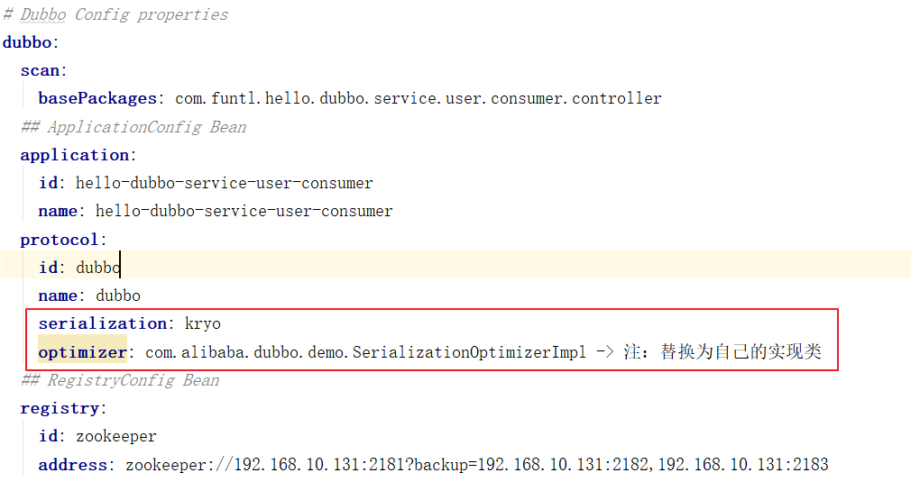

Dubbo 中的序列化
Dubbo RPC 是 Dubbo 体系中最核心的一种高性能、高吞吐量的远程调用方式，可以称之为多路复用的 TCP 长连接调用：
- 长连接：避免了每次调用新建 TCP 连接，提高了调用的响应速度
- 多路复用：单个 TCP 连接可交替传输多个请求和响应的消息，降低了连接的等待闲置时间，从而减少了同样并发数下的网络连接数，提高了系统吞吐量
Dubbo RPC 主要用于两个 Dubbo 系统之间的远程调用，特别适合高并发、小数据的互联网场景。而序列化对于远程调用的响应速度、吞吐量、网络带宽消耗等同样也起着至关重要的作用，是我们提升分布式系统性能的最关键因素之一。
Dubbo 中支持的序列化方式：
- dubbo 序列化：阿里尚未开发成熟的高效 java 序列化实现，阿里不建议在生产环境使用它
- hessian2 序列化：hessian 是一种跨语言的高效二进制序列化方式。但这里实际不是原生的 hessian2 序列化，而是阿里修改过的 hessian lite，它是 dubbo RPC 默认启用的序列化方式
- json 序列化：目前有两种实现，一种是采用的阿里的 fastjson 库，另一种是采用 dubbo 中自己实现的简单 json 库，但其实现都不是特别成熟，而且 json 这种文本序列化性能一般不如上面两种二进制序列化。
- java 序列化：主要是采用 JDK 自带的 Java 序列化实现，性能很不理想。
在通常情况下，这四种主要序列化方式的性能从上到下依次递减。对于 dubbo RPC 这种追求高性能的远程调用方式来说，实际上只有 1、2 两种高效序列化方式比较般配，而第 1 个 dubbo 序列化由于还不成熟，所以实际只剩下 2 可用，所以 dubbo RPC 默认采用 hessian2 序列化。
但 hessian 是一个比较老的序列化实现了，而且它是跨语言的，所以不是单独针对 Java 进行优化的。而 dubbo RPC 实际上完全是一种 Java to Java 的远程调用，其实没有必要采用跨语言的序列化方式（当然肯定也不排斥跨语言的序列化）。
最近几年，各种新的高效序列化方式层出不穷，不断刷新序列化性能的上限，最典型的包括：
- 专门针对 Java 语言的：Kryo，FST 等等
- 跨语言的：Protostuff，ProtoBuf，Thrift，Avro，MsgPack 等等
这些序列化方式的性能多数都显著优于 hessian2（甚至包括尚未成熟的 dubbo 序列化）
有鉴于此，我们为 dubbo 引入 Kryo 和 FST 这两种高效 Java 序列化实现，来逐步取代 hessian2。
其中，Kryo 是一种非常成熟的序列化实现，已经在 Twitter、Groupon、Yahoo 以及多个著名开源项目（如 Hive、Storm）中广泛的使用。而 FST 是一种较新的序列化实现，目前还缺乏足够多的成熟使用案例。
在面向生产环境的应用中，目前更优先选择 Kryo。
启用 Kryo
在 Provider 和 Consumer 项目启用 Kryo 高速序列化功能，两个项目的配置方式相同
增加 Kryo 依赖
1 | <dependency> |
增加配置

注册被序列化类
要让 Kryo 和 FST 完全发挥出高性能，最好将那些需要被序列化的类注册到 dubbo 系统中，例如，我们可以实现如下回调接口：1
2
3
4
5
6
7
8
9
10
11
12public class SerializationOptimizerImpl implements SerializationOptimizer {
public Collection<Class> getSerializableClasses() {
List<Class> classes = new LinkedList<Class>();
classes.add(BidRequest.class);
classes.add(BidResponse.class);
classes.add(Device.class);
classes.add(Geo.class);
classes.add(Impression.class);
classes.add(SeatBid.class);
return classes;
}
}
在注册这些类后，序列化的性能可能被大大提升，特别针对小数量的嵌套对象的时候。
当然，在对一个类做序列化的时候，可能还级联引用到很多类，比如 Java 集合类。针对这种情况，我们已经自动将 JDK 中的常用类进行了注册，所以你不需要重复注册它们（当然你重复注册了也没有任何影响），包括：
1 | GregorianCalendar |
由于注册被序列化的类仅仅是出于性能优化的目的，所以即使你忘记注册某些类也没有关系。事实上，即使不注册任何类，Kryo 和 FST 的性能依然普遍优于 hessian 和 dubbo 序列化。
为什么需要手动注册
当然，有人可能会问为什么不用配置文件来注册这些类？这是因为要注册的类往往数量较多，导致配置文件冗长；而且在没有好的 IDE 支持的情况下，配置文件的编写和重构都比 Java 类麻烦得多；最后，这些注册的类一般是不需要在项目编译打包后还需要做动态修改的。
另外，有人也会觉得手工注册被序列化的类是一种相对繁琐的工作，是不是可以用 annotation 来标注，然后系统来自动发现并注册。但这里 annotation 的局限是，它只能用来标注你可以修改的类，而很多序列化中引用的类很可能是你没法做修改的（比如第三方库或者 JDK 系统类或者其他项目的类）。另外，添加 annotation 毕竟稍微的“污染”了一下代码，使应用代码对框架增加了一点点的依赖性。
除了 annotation，我们还可以考虑用其它方式来自动注册被序列化的类，例如扫描类路径，自动发现实现 Serializable 接口（甚至包括 Externalizable）的类并将它们注册。当然，我们知道类路径上能找到 Serializable 类可能是非常多的，所以也可以考虑用 package 前缀之类来一定程度限定扫描范围。
当然，在自动注册机制中，特别需要考虑如何保证服务提供端和消费端都以同样的顺序（或者 ID）来注册类，避免错位，毕竟两端可被发现然后注册的类的数量可能都是不一样的。
无参构造函数和 Serializable 接口
如果被序列化的类中不包含无参的构造函数，则在 Kryo 的序列化中，性能将会大打折扣，因为此时我们在底层将用 Java 的序列化来透明的取代 Kryo 序列化。所以，尽可能为每一个被序列化的类添加无参构造函数是一种最佳实践（当然一个 Java 类如果不自定义构造函数，默认就有无参构造函数）。
另外，Kryo 和 FST 都不需要被序列化类实现 Serializable 接口，但我们还是建议每个被序列化类都去实现 Serializable 接口，因为这样可以保持和 Java 序列化以及 dubbo 序列化的兼容性，另外也使我们未来采用上述某些自动注册机制带来可能。
案例源码：https://github.com/V-Vincen/hello-dubbo
If you like this blog or find it useful for you, you are welcome to comment on it. You are also welcome to share this blog, so that more people can participate in it. If the images used in the blog infringe your copyright, please contact the author to delete them. Thank you !